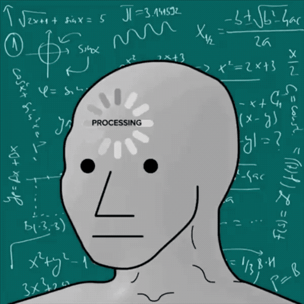
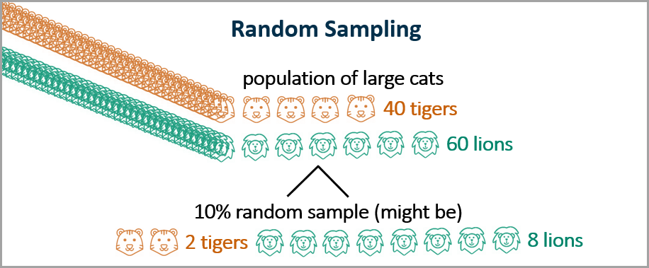
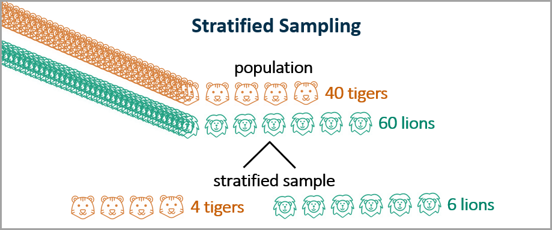

Sesión de laboratorio 2: Preprocesamiento de datos
Objetivos de la sesión
🎯 Objetivo general: Aprender a preparar y preprocesar datos antes de modelar, asegurando que los conjuntos de datos con los que trabajamos sean consistentes, significativos y estén listos para los algoritmos de aprendizaje automático.

En proyectos reales, la calidad de los datos determina en gran medida la calidad del modelo. No importa cuán sofisticado sea un algoritmo, si los datos de entrada son deficientes, las predicciones serán poco fiables. El preprocesamiento es la etapa donde limpiamos, transformamos y estructuramos los datos para que los modelos puedan aprender de manera efectiva y sin distorsiones.
En esta sesión, desarrollaremos una comprensión de por qué el preprocesamiento es esencial y luego lo aplicaremos en la práctica. Verás cómo identificar y seleccionar atributos relevantes, tratar valores faltantes, normalizar variables que existen en escalas muy diferentes e investigar el efecto de los valores atípicos. También aprenderás por qué es crucial separar los datos en subconjuntos de entrenamiento y prueba antes de la evaluación. Finalmente, compararás conjuntos de datos en bruto y preprocesados para apreciar cuánto pueden cambiar los resultados en la práctica. Dominar estas ideas te ayudará a evitar errores comunes como el data leakage, modelos sesgados o sobreajuste.
Actividades propuestas
A lo largo de estas actividades, trabajarás con el conjunto de datos Chronic Kidney Disease. Este conjunto contiene información sobre pacientes con enfermedad renal crónica, incluyendo diversos atributos médicos y demográficos. Es un benchmark común para tareas de clasificación, donde el objetivo es predecir la presencia o ausencia de la enfermedad en función de otras variables. Puedes descargarlo desde este enlace y puedes encontrar una explicación de cada atributo en UCI. Carga el conjunto de datos como hicimos en la sesión anterior (usando el widget CSV File Import). ¡Una vez listo, podemos comenzar a preprocesarlo!
1. Limpieza de datos
🎯 Objetivo: Identificar y tratar categorías de texto.
El primer paso en el preprocesamiento es asegurarse de que los datos sean limpios y consistentes. Esto implica identificar y tratar categorías de texto, así como asegurarse de que las variables categóricas estén correctamente formateadas.
Visualiza el contenido del conjunto de datos y encuentra cualquier error que pueda haber ocurrido durante la recopilación. Identifica las categorías de texto y busca variables que contengan datos de texto, como “yes”/“no” u otros valores categóricos, y asegúrate de que los valores únicos estén correctamente codificados. Puedes usar el widget Edit Domain para renombrar o recodificar estas categorías si es necesario. Puede haber inconsistencias en cómo se representan las categorías (por ejemplo, “yes”, “Yes”, “YES”). Estandariza estas entradas para asegurar uniformidad.
Asegúrate de que la variable correcta esté establecida como variable objetivo (la que quieres predecir). En este caso, debe ser la variable que indica la presencia o ausencia de enfermedad renal crónica (CKD). Puedes usar el widget Select Columns para establecer la variable objetivo adecuadamente.
📝 Preguntas:
- ¿Hay inconsistencias en las categorías de texto? Si es así, ¿cómo las estandarizaste?
- ¿Qué variable estableciste como variable objetivo y por qué?
- ¿Encontraste otros problemas en el conjunto de datos que debían ser tratados? Si es así, ¿cuáles?
2. Particiones de datos
🎯 Objetivo: Comprender la importancia de realizar particiones en el conjunto de datos.
Cuando construimos un modelo de aprendizaje automático, queremos que aprenda patrones que pueda aplicar a nuevas situaciones, no solo memorizar los ejemplos que le damos. Para comprobar si esto ocurre, necesitamos separar nuestros datos en dos partes:
- Conjunto de entrenamiento: los datos que el modelo usa para aprender.
- Conjunto de prueba: los datos que reservamos para comprobar cómo funciona el modelo en ejemplos no vistos.
Si solo probamos el modelo con los mismos datos con los que fue entrenado, los resultados pueden ser engañosos. El modelo podría parecer perfecto simplemente porque ha memorizado las respuestas, pero esto nos dice poco sobre cómo se comportará en el mundo real.
Piensa en ello como estudiar para un examen:
- Practicas con ejercicios del libro (entrenamiento).
- Luego haces el examen real, que tiene preguntas diferentes (prueba).
Solo si te va bien en el examen puedes estar seguro de que realmente entiendes el material, en vez de solo memorizar los ejercicios de práctica. El aprendizaje automático funciona igual: probar con datos nuevos muestra si el modelo realmente ha aprendido y puede generalizar a casos futuros.
2.1 Particiones aleatorias
Comienza creando una partición aleatoria del conjunto de datos en conjuntos de entrenamiento y prueba. Una división común es 70% para entrenamiento y 30% para prueba, pero puedes elegir diferentes proporciones según tus necesidades.

Usa el widget Data Sampler para crear una partición aleatoria del conjunto de datos. Establece el tipo de muestreo en “Random” y elige una proporción para el conjunto de entrenamiento (por ejemplo, 70% para entrenamiento y 30% para prueba). Conecta la salida del Data Sampler a dos widgets Data Table para visualizar ambos conjuntos. Debes asegurarte de que la entrada de cada tabla sea la salida correspondiente del Data Sampler (una contiene el subconjunto de entrenamiento y la otra el de prueba).
Visualiza cómo se distribuyen dos características relevantes en ambos subconjuntos. Puedes usar el widget Scatter Plot para visualizar la relación entre dos características numéricas y el widget Distributions para ver cómo se distribuyen las características individuales. Compara las distribuciones en los conjuntos de entrenamiento y prueba para ver si son similares.
Luego repite el proceso con 95% para entrenamiento y 5% para prueba.
📝 Preguntas:
- ¿Qué proporción elegiste para los conjuntos de entrenamiento y prueba? ¿Por qué? Cambia la proporción y observa cómo afecta las distribuciones.
- ¿Las distribuciones de las características clave se ven similares en ambos subconjuntos? Si no, ¿qué diferencias observaste?
- ¿Por qué es importante tener distribuciones similares en los conjuntos de entrenamiento y prueba?
- ¿Cómo afecta el cambio de la proporción de la división (por ejemplo, 70/30 vs. 95/5) a las distribuciones en los conjuntos de entrenamiento y prueba?
2.2 Particiones estratificadas
En algunos casos, especialmente cuando se trabaja con conjuntos de datos desbalanceados (donde una clase es mucho más común que otra), el muestreo aleatorio podría no preservar la distribución de clases en ambos subconjuntos. Esto puede llevar a resultados engañosos al evaluar el modelo. Para solucionar esto, podemos usar el muestreo estratificado, que asegura que las proporciones de clase se mantengan en los conjuntos de entrenamiento y prueba.

Usa nuevamente el widget Data Sampler, pero esta vez establece el tipo de muestreo en “Stratified”. Elige la variable objetivo (la que indica la presencia o ausencia de CKD) para asegurar que ambos subconjuntos mantengan la misma distribución de clases que el conjunto original. Luego repite el proceso de visualizar las distribuciones de las características clave en ambos subconjuntos usando el widget Scatter Plot.
📝 Preguntas:
- ¿En qué se diferencia el muestreo estratificado del muestreo aleatorio en cuanto a la distribución de clases?
- ¿Notaste alguna diferencia en las distribuciones de las características clave entre los conjuntos de entrenamiento y prueba al usar muestreo estratificado?
- ¿Por qué es especialmente importante el muestreo estratificado en conjuntos de datos desbalanceados?
2.3 Validación cruzada
Además de crear una sola división de entrenamiento y prueba, otro enfoque común para evaluar modelos de aprendizaje automático es la validación cruzada. Esta técnica consiste en dividir el conjunto de datos en múltiples subconjuntos (o “folds”) y entrenar/probar el modelo varias veces, cada vez usando un fold diferente como conjunto de prueba y los restantes como conjunto de entrenamiento. Esto ayuda a asegurar que el rendimiento del modelo sea robusto y no dependa de una división particular de los datos.

Implementaremos la validación cruzada en la próxima sesión de laboratorio cuando empecemos a construir y evaluar modelos. Por ahora, solo entiende que es una técnica poderosa para evaluar el rendimiento de los modelos de manera más fiable.
2.4 Conjunto de validación
Además de los conjuntos de entrenamiento y prueba, a menudo es útil crear un tercer subconjunto llamado conjunto de validación. Este conjunto se utiliza durante el desarrollo del modelo para ajustar hiperparámetros y tomar decisiones sobre la arquitectura del modelo sin tocar el conjunto de prueba. El conjunto de validación ayuda a evitar el sobreajuste al conjunto de entrenamiento y proporciona una evaluación imparcial del modelo durante el desarrollo.
Implementaremos el conjunto de validación en la próxima sesión de laboratorio. Por ahora, solo comprende su propósito e importancia.
3. Normalización de datos
🎯 Objetivo: Comprender la importancia de normalizar los datos.
Cuando se trabaja con conjuntos de datos que contienen características numéricas en diferentes escalas, es importante normalizar los datos. La normalización asegura que todas las características contribuyan por igual a los cálculos de distancia utilizados por muchos algoritmos de aprendizaje automático. Si una característica tiene un rango mucho mayor que otras, puede dominar la métrica de distancia y llevar a resultados sesgados. Por ejemplo, si una característica varía de 0 a 1 y otra de 0 a 1000, la segunda tendrá un impacto mucho mayor en los cálculos de distancia.
3.1 Normalización Min-Max
La normalización Min-Max es una técnica común para escalar características a un rango específico, normalmente [0, 1]. La fórmula es:
\[ X' = \frac{X - X_{min}}{X_{max} - X_{min}} \]
donde:
- \(X\) es el valor original,
- \(X_{min}\) es el valor mínimo de la característica,
- \(X_{max}\) es el valor máximo de la característica,
- \(X'\) es el valor normalizado.
Pasa tus datos al widget Continuize y conecta la salida a un widget Distributions para visualizar el efecto de la normalización en las características. Visualiza cómo se distribuyen dos características relevantes antes y después de aplicar la normalización Min-Max.
📝 Preguntas:
- ¿Cuáles son las ventajas de usar la normalización Min-Max?
- ¿Hay posibles inconvenientes al usar la normalización Min-Max?
- ¿Cómo cambiaron las distribuciones de las características tras aplicar la normalización Min-Max?
3.2 Estandarización
La estandarización (también conocida como normalización Z-score) es otra técnica común para escalar características. Transforma los datos para que tengan media 0 y desviación estándar 1. La fórmula es:
\[ X' = \frac{X - \mu}{\sigma} \]
donde:
- \(X\) es el valor original,
- \(\mu\) es la media de la característica,
- \(\sigma\) es la desviación estándar de la característica,
- \(X'\) es el valor normalizado.
Cambia el widget Continuize a “Standardization” y conecta la salida a un widget Distributions para visualizar el efecto de la estandarización en las características. Visualiza cómo se distribuyen dos características relevantes antes y después de aplicar la estandarización.
📝 Preguntas:
- ¿Cuáles son las ventajas de usar la estandarización?
- ¿Hay posibles inconvenientes al usar la estandarización?
- ¿Cómo cambiaron las distribuciones de las características tras aplicar la estandarización?
3.3 Efectos de los valores atípicos en la normalización
Los valores atípicos son valores extremos que difieren significativamente de otras observaciones en el conjunto de datos. Pueden surgir por errores de medición, errores de entrada de datos o verdadera variabilidad en los datos. Los valores atípicos pueden tener un impacto significativo en las técnicas de normalización, especialmente en la normalización Min-Max, ya que pueden distorsionar la escala de los demás puntos.
Observa la variable bp (presión arterial) en el conjunto de datos. Usa el widget Scatter Plot y/o Box Plot para visualizar la distribución de esta variable e identificar posibles valores atípicos. Luego, aplica tanto la normalización Min-Max como la estandarización al conjunto de datos usando el widget Continuize y visualiza cómo cambian las distribuciones de la variable bp tras la normalización.
📝 Preguntas:
- ¿Cómo afectan los valores atípicos a la normalización Min-Max?
- ¿Cómo afectan los valores atípicos a la estandarización?
3.4 Normalización y particiones de datos
Es crucial aplicar las técnicas de normalización solo al conjunto de entrenamiento y luego usar los mismos parámetros (por ejemplo, mínimo, máximo, media, desviación estándar) para transformar el conjunto de prueba. Esto previene el data leakage, que ocurre cuando información del conjunto de prueba se usa durante el entrenamiento, lo que lleva a estimaciones de rendimiento demasiado optimistas.
Para lograr esto en Orange, puedes usar el widget Apply Domain para ajustar los parámetros de normalización en el conjunto de entrenamiento y luego aplicarlos al conjunto de prueba. Para hacerlo, conecta la salida del Data Sampler (conjunto de entrenamiento) al widget Continuize, y luego conecta la salida del widget Continuize al widget Apply Domain y configúralo como Template Data. Finalmente, conecta la salida del conjunto de prueba del Data Sampler al widget Apply Domain y configúralo como Data. Así, los parámetros de normalización se aprenden del conjunto de entrenamiento y se aplican al conjunto de prueba.
📝 Preguntas:
- ¿Por qué es importante aplicar las técnicas de normalización solo al conjunto de entrenamiento?
- ¿Qué podría pasar si usamos el conjunto de prueba para ajustar los parámetros de normalización?
- ¿Cómo funciona el widget Apply Domain en Orange para la normalización?
La elección entre técnicas de normalización como Min-Max y estandarización depende de las características específicas del conjunto de datos y de los requisitos del algoritmo de aprendizaje automático que se utilice. La normalización Min-Max suele preferirse cuando los datos están distribuidos uniformemente y el algoritmo requiere un rango específico (por ejemplo, [0, 1]). La estandarización es más adecuada para algoritmos que asumen datos distribuidos normalmente o cuando los datos contienen valores atípicos.
En la práctica, es esencial visualizar la distribución de los datos antes y después de aplicar técnicas de normalización. Esto ayuda a identificar el método más apropiado y a asegurar que los datos transformados cumplen con los supuestos del algoritmo de aprendizaje automático elegido.
4. Imputación de datos
🎯 Objetivo: Aprender a rellenar valores faltantes en el conjunto de datos.
Los valores faltantes son un problema común en conjuntos de datos reales. Pueden ocurrir por diversas razones, como errores de entrada de datos, fallos de equipos o encuestados que omiten preguntas en cuestionarios. Tratar los valores faltantes es crucial porque pueden llevar a resultados sesgados y reducir la efectividad de los modelos de aprendizaje automático. Hay varias estrategias para tratar los valores faltantes, incluyendo:
- Eliminar filas o columnas con valores faltantes (si la cantidad de datos faltantes es pequeña).
- Imputar valores faltantes usando medidas estadísticas (media, mediana, moda) o técnicas más avanzadas (por ejemplo, k vecinos más cercanos, regresión).
La elección del método depende de la naturaleza de los datos y del grado de valores faltantes.
4.1 Eliminación de valores faltantes
Primero, veamos cómo eliminar filas con valores faltantes. Usa el widget Impute para filtrar las filas que contienen cualquier valor faltante. Conecta la salida a un widget Data Table para visualizar el conjunto de datos limpio.
📝 Preguntas: 1. ¿Cuántas filas se eliminaron debido a valores faltantes? 2. ¿Cuáles son los posibles inconvenientes de eliminar filas con valores faltantes?
4.2 Imputación de valores faltantes
En muchos casos, puede ser más apropiado imputar los valores faltantes en vez de eliminarlos. La imputación consiste en rellenar los valores faltantes con estimaciones basadas en los datos disponibles. Hay varios métodos para imputar valores faltantes, incluyendo:
- Imputación por media/mediana/moda: Reemplazar los valores faltantes por la media, mediana o moda de la columna.
- Imputación por k vecinos más cercanos (KNN): Usar los valores de los vecinos más cercanos para estimar los valores faltantes.
- Imputación por regresión: Usar modelos de regresión para predecir y rellenar los valores faltantes en función de otras características.
Usa el widget Impute para rellenar los valores faltantes. Puedes elegir diferentes métodos de imputación para diferentes columnas. Conecta la salida a un widget Data Table para visualizar el conjunto de datos imputado.
📝 Preguntas:
- ¿Cuáles son las ventajas y desventajas de usar métodos de imputación para tratar valores faltantes?
- ¿Cómo puedes evaluar el impacto de la imputación en el conjunto de datos?
- ¿En qué situaciones preferirías usar imputación en vez de simplemente eliminar los valores faltantes?
Mini-proyecto: Preparando datos para el modelado
En este mini-proyecto, aplicarás los conceptos aprendidos en esta sesión para preprocesar un nuevo conjunto de datos.
Imagina que acabas de unirte a un grupo de investigación que estudia la calidad de los automóviles y los precios de mercado. El equipo ha recopilado el conjunto de datos Imports 1985 (disponible en el widget Datasets). La primera impresión puede ser que es rico y detallado. Sin embargo, una mirada más cercana revela varios problemas: algunos atributos contienen valores faltantes o inconsistentes (a menudo codificados como ?), otros están medidos en escalas muy diferentes, y hay algunos casos extremos que podrían ser verdaderos valores atípicos del mercado o simples errores de registro. Además, algunas columnas numéricas pueden estar almacenadas como texto y no ser reconocidas correctamente como numéricas, y no todos los atributos disponibles son necesariamente relevantes para la tarea de predicción.
Tu papel es diseñar un flujo de trabajo de preprocesamiento en Orange que transforme este conjunto de datos en uno confiable y listo para el modelado (por ejemplo, para predecir el price o construir un clasificador para symboling). Esto requerirá tomar decisiones sobre qué variables conservar, cómo tratar los datos incompletos, si ajustar o no las escalas de las variables y qué hacer con los valores inusuales. Una vez que hayas llegado a una versión del conjunto de datos que consideres adecuada, deberás asegurarte de que esté correctamente dividido en subconjuntos de entrenamiento y prueba para que los modelos futuros puedan evaluarse de manera justa.
No existe una única secuencia de pasos correcta, y diferentes elecciones pueden llevar a resultados distintos. Lo importante es que pienses cuidadosamente en cada decisión y puedas justificar por qué trataste los datos de la manera en que lo hiciste.
Nota final
✨ ¡Excelente trabajo! Has aprendido a preprocesar datos de manera efectiva, lo cual es un paso crucial en cualquier proyecto de aprendizaje automático. Al limpiar los datos, tratar los valores faltantes, normalizar las características y crear particiones adecuadas, has sentado una base sólida para construir modelos confiables.
En la próxima sesión, verás cómo estas decisiones impactan el rendimiento de los modelos de aprendizaje supervisado. Recuerda guardar ambos flujos de trabajo (el original y el preprocesado) para que puedas comparar sus efectos.
📤 Cómo entregar
- Guarda/exporta tu informe completado como PDF.
- Renombra el archivo PDF siguiendo la convención de abajo.
- Ve a Aula Global → esta asignatura → Tareas → buzón de entrega “Lab 2”, y sube el PDF antes de la fecha límite.
- Adjunta también tu archivo de flujo de trabajo de Orange (.ows, guardado con Archivo > Guardar como… en Orange) en la misma entrega.
Nombre del archivo: Lab2_Apellido_Nombre.pdf (ej. Lab2_Garcia_Maria.pdf)